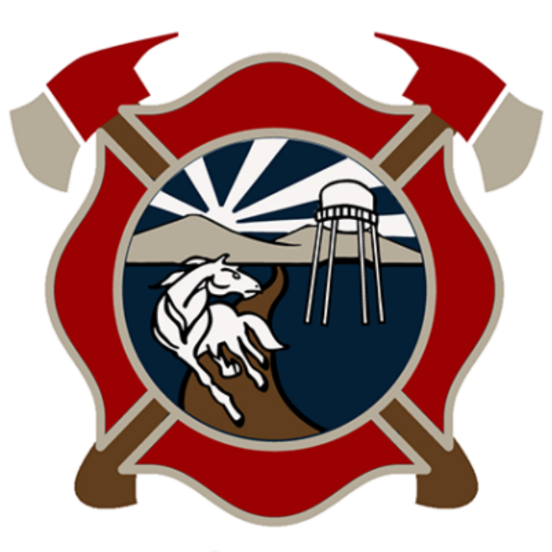
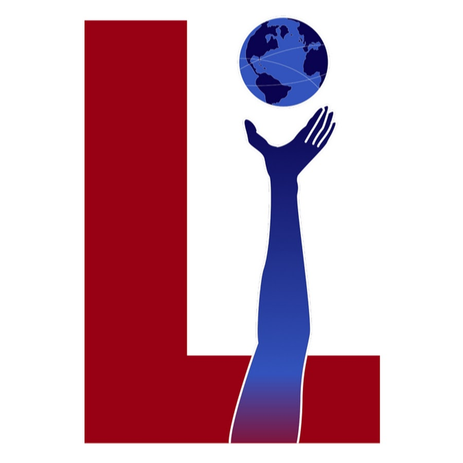

Harry Bawa
Student | Athlete | Engineer
● Pre-Med ● BMB ● BME/BT
I am actively...
Studying BMB at UC Davis, building biomedical projects (BME/BT projects), training in bodybuilding & calisthenics, and coaching/mentoring individuals in exercise & health.
I am leisurely...
Training in volleyball semi-competitively, researching oncology, and reading/writing (currently writing a book).
TL;DR: I aspire to be a medical professional in the field of oncology (cancer) & surgical oncology.
As modern society advances, health complications within our nation have also advanced—specifically, cancer. Though countermeasures against this rise are praised, it is more imperative to focus on the affected populations at present. With continued development in scientific understanding and intrinsic cooperation, proper treatment and recovery of cancer patients are to be assured. With the skills and knowledge I gain throughout my undergraduate and professional education, I believe I can make a positive impact towards that goal.
In my heart, I believe that every human has an obligation to make the world a better place, no matter how big or small. This can range from self-improvement, helping those in need, or creating something beneficial for others—things I try to do my best in. With the knowledge and skills I gather from academia and my personal life, I ensure my actions take part in the bigger story of life: the long dream of humanity.
University of California, Davis
Class of 2029
B.S. in Biochemistry & Molecular Biology
UC Davis College of Biological Sciences
Curricular Focus
On track to graduate in 2-3 years, emphasis on medical-specific material mastery.
Extracurricular Focus
Mentoring/coaching individuals on exercise and health, BME/BT projects.

UC Davis Fire Department, Emergency Medical Technician (EMT)
March 2026 — Current (In training)

Leadership Initiatives, Advanced Medical & Public Health Intern
August 2023 — March 2024
Science Olympiad 2025, Division C Final Medalist
August 2024 — May 2025